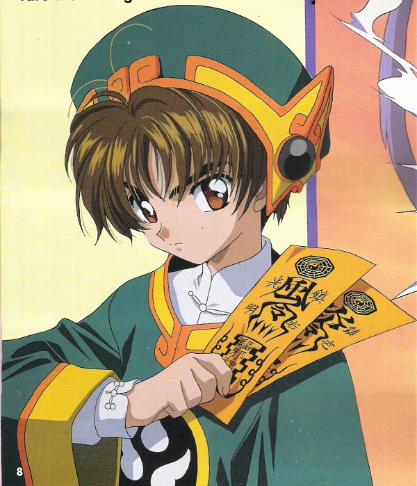

About the Characters

Sakura Kinomoto
Main ProtagonistThe main protagonist of the story, she accidentally opened the Clow Book and released the Clow Cards, leaving her the task of collecting and sealing them away.

Syaoran Li
A boy from Hong Kong, a member of the Li Clan of Sorcerers who is initially after the Clow Cards, believing himself to be their rightful inheritor, but later falls in love with Sakura.

Tomoyo Daidouji
The best friend of Sakura Kinomoto. She becomes Sakura's primary assistant by designing "battle costumes" and filming all of her magical (and non-magical) endeavors.
Kero
The Beast of the Seal who guards the Clow Book and is one of the two Guardians of the Clow Cards, along with Yue. He appoints Sakura the title of Cardcaptor and sends her off to retrieve the cards. He is referred to as Keroberos in the English adaptions.